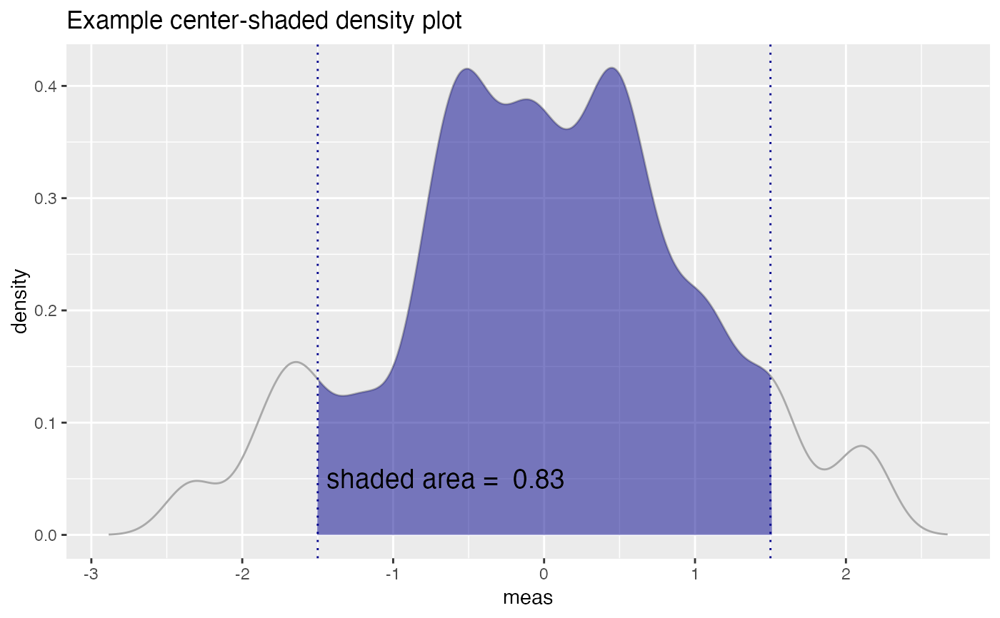

R/ShadedDensity.R
ShadedDensityCenter.RdPlot the distribution of a variable with a center region shaded. Annotate with the area of the shaded region.
ShadedDensityCenter(frame, xvar, boundaries, title, ..., linecolor = "darkgray", shading = "darkblue", annotate_area = TRUE)
| frame | data frame to get values from |
|---|---|
| xvar | name of the variable to be density plotted |
| boundaries | vector of the min and max boundaries of the shaded region |
| title | title to place on plot |
| ... | no unnamed argument, added to force named binding of later arguments. |
| linecolor | color of density curve |
| shading | color of shaded region and boundaries |
| annotate_area | if TRUE (default), report the area of the shaded region |
set.seed(52523) d = data.frame(meas=rnorm(100)) boundaries = c(-1.5, 1.5) WVPlots::ShadedDensityCenter(d, "meas", boundaries, title="Example center-shaded density plot")